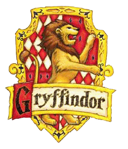

gryffindor
마법 세계의 우수한 마법사를 다수 배출했으며, 현재 기숙사 사감은 미네르바 맥고나걸. 그녀는 7권에서 알버스 덤블도어 사후 벌어진 제2차 마법사 전쟁 이후, 호그와트 교장직을 겸임했다.
주인공 3인방의 기숙사인 만큼, 거의 모든 이야기가 이 기숙사를 중심으로 진행된다. 세계관 최고의 마법사인 알버스 덤블도어를 배출해 낸 기숙사다 보니 내적으로나 외적으로나 인식이 좋다.
헤르미온느 그레인저도 호그와트 입학 당시 정보를 수집해 그리핀도르를 가장 좋은 기숙사로 인지하고 있었으며, 해리 포터 역시 자신이 그리핀도르 기숙사 소속이라는 사실을 항상 자랑스러워하고 긍지로
여기고 있다.
슬리데린과는 대척점에 있는 것 같지만, 그리핀도르가 대의를 위해서 규칙을 과감히 어기는 모습을 보면, 의외로 출세하기 위해 수단과 방법을 가리지 않는 슬리데린과 공통된 부분이 많다.
해리가 슬리데린을 거부하자 분류 모자가 대안으로 그리핀도르로 보낸 것도 나름대로 이유가 있는 셈. 주인공 3인방이 주인공이여서 좋게 보이는 거지, 학교 입장에서는 사건을 해결하긴 해도
입학부터 졸업할 때까지 뒤에서 남 몰래 사고치는 3인방이 마냥 좋게 보이지만은 않을 것이며, 작중 몇몇 교수들에게 그런 점을 자주 지적받는다